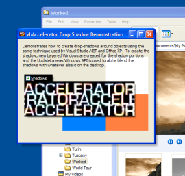
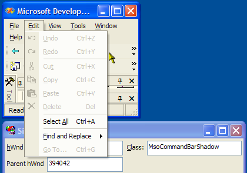

VB5 Drop Shadow Code (52K)
VB5 Drop Shadow Code (52K)
 VB6 Drop Shadow Code (49K)
VB6 Drop Shadow Code (49K)
 3 Feb 2003
3 Feb 2003
First Posted
 Sophisticated Control Over Window Sizing and Moving
Sophisticated Control Over Window Sizing and Moving
 Subclassing Without The Crashes
Subclassing Without The Crashes
 Fading Out Selected Areas Using UpdatedLayeredWindow
Fading Out Selected Areas Using UpdatedLayeredWindow

Creating Drop-Shadows
Using the Office/VS.NET ComamndBar technique to draw drop-shadows for Windows and Controls
Demonstrates how to create drop-shadows for windows and controls using the same technique used by Office XP/VS.NET CommandBars.
If It Wasn't For Those Meddling Kids...
You can see how Office XP and VS.NET CommandBars implement drop-shadows by running the Simple Windows Spy utility whilst pointing at the menus.
VS.NET Menu Shadows are created using a separate window with class MsoCommandBarShadow
Further investigation demonstrates that separate windows are used for the right and bottom borders. The bottom border stretches the whole way along the menu, and has corners at either end, whilst the right border stretches from the top to the bottom corner and only has a top corner.
We can use the same technique in Visual Basic. To do this we need to be able to:
- Create a window which can't be clicked.
- Draw a shadow onto the window so it alpha-blends with the desktop. Closest to the object, the shadow should be darkest (higher alpha) whilst further away from the object the shadow should fade out (low alpha).
- Be able to move and size the shadow image in response to the object sizing or moving.
Creating a window which can't be clicked, and also allows us to draw an image with variable alpha is accomplished using the techniques described in Selection Fading. Once this window has been created, you can then draw an alpha image onto it in realtime using the code described in Alpha DIB Sections. Finally, to move or size the shadows in response to the object moving, the code in Sophisticated Control over Window Sizing and Moving is used.
Wrapping It Up
All of this functionality has been built into a reusable form fDropShadow. Using this form is simple. Here's how:
- Declare an instance of the drop-shadow form:
Private m_fRightShadow As fDropShadow
- Configure the shadow and display it:
Private Sub Form_Load() set m_fRightShadow = New fDropShadow With m_fRightShadow .ShadowSize = 8 ' The default is 5, as per CommandBars .ShadowType = RightShadow ' or BottomShadow .Shadow = Me ' Object to shadow .Show , Me End With End Sub - Finally, clear up when unloading the form (although this does
happen automatically as when you showed the form you specified
the owner):
Private Sub Form_Unload() Unload m_fRightShadow Set m_fRightShadow = Nothing End Sub
Drawing a Drop-Shadow
This section describes how the drop-shadow itself is drawn within fDropShadow.
The Drop Shadow fades out towards the edges in all dimensions
To create a drop-shadow you need to be able to modify the alpha on a per-pixel basis, since you want to combine a variable amount of black with the actual background colour behind the sample. If you attempt to create the shadow with variable colours, and then apply it using a constant alpha, you'll find that on some backgrounds the lighter shades actually lighten the background, rather than darken it. So the actual image itself should have all of the pixels set to black, and as noted before a large alpha (more opaque) closer to the edges and a small alpha (more transparent) further away from the edges. This can be achieved programmatically by modifying alpha bits directly: since the shadow itself is small to do this in realtime is within the capabilities of most modern systems.
Here is the code to create a bottom shadow using an alpha DIBSection:
Dim bDib() As Byte
Dim x As Long, y As Long
Dim lC As Long, lInitC As Long, lSize As Long
Dim tSA As SAFEARRAY2D
' Get the bits in the from DIB section:
With tSA
.cbElements = 1
.cDims = 2
.Bounds(0).lLbound = 0
.Bounds(0).cElements = m_tBI.bmiHeader.biHeight
.Bounds(1).lLbound = 0
.Bounds(1).cElements = BytesPerScanLine()
.pvData = m_lPtr
End With
CopyMemory ByVal VarPtrArray(bDib()), VarPtr(tSA), 4
lSize = m_tBI.bmiHeader.biHeight
For x = 0 To BytesPerScanLine - 1 Step 4
' Check if near start or end; if so reduce the alpha
' to create the corners:
If (x < lSize * 4) Then
lInitC = (255 * x) \ (lSize * 4)
ElseIf (x >= (BytesPerScanLine - lSize * 4)) Then
lInitC = (((BytesPerScanLine - x) * 255) \ (4 * lSize))
Else
lInitC = 255
End If
' Set the alpha according to distance from the edge:
For y = 0 To DibHeight - 1
lC = (lInitC * y) \ DibHeight
bDib(x + 3, y) = lC
bDib(x + 2, y) = 0
bDib(x + 1, y) = 0
bDib(x, y) = 0
Next y
Next x
' Clear the temporary array descriptor
CopyMemory ByVal VarPtrArray(bDib), 0&, 4
Note that whether drop-shadowing is enabled on a system or not is a System -> Performance setting. You can check whether a system has this enabled by checking the SPI_GETDROPSHADOW system parameter:
Private Declare Function SystemParametersInfo Lib "user32" _
Alias "SystemParametersInfoA" ( _
ByVal uAction As Long, ByVal uParam As Long, _
ByRef lpvParam As Any, ByVal fuWinIni As Long) As Long
Private Const SPI_GETDROPSHADOW As Long = &H1024&
...
Public Property Get DropShadowsEnabled() As Boolean
Dim lDropShadow As Long
SystemParametersInfo SPI_GETDROPSHADOW, 0, lDropShadow, 0
DropShadowsEnabled = Not (lDropShadow = 0)
End Property